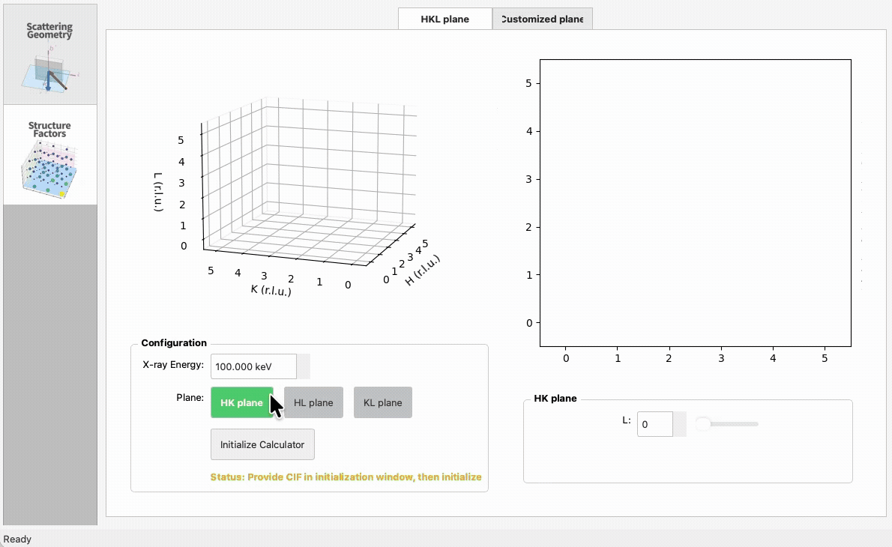
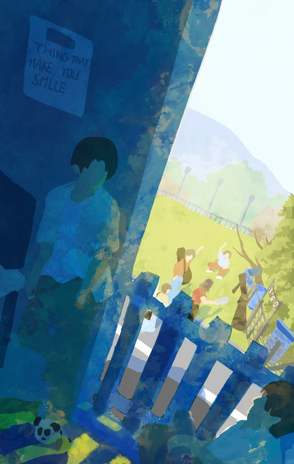
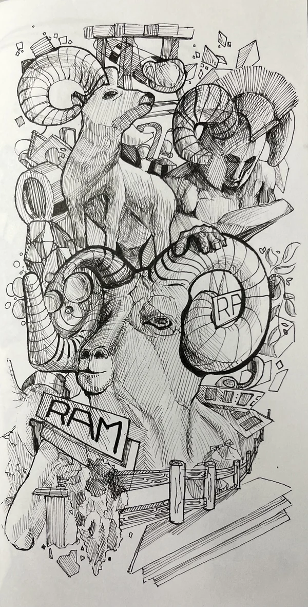
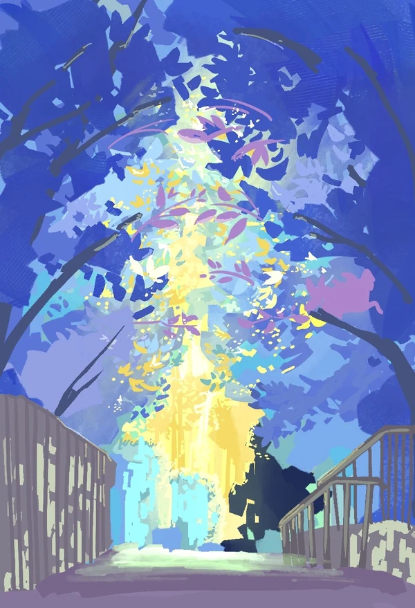

Software development
ADVISOR: X-ray toolbox
Interactive GUI for visualising and calculating X-ray scattering/diffraction experiments.
Get ADVISOR on PyPIPhysics Software Design CV

Interactive GUI for visualising and calculating X-ray scattering/diffraction experiments.
Get ADVISOR on PyPI
A desktop interface that brings robot positioning, live camera views and Laue diffraction acquisition into one workspace.
Explore the lab tools
I turn scientific ideas into interactive experiences. For our UZH physics open day, I paired a visual poster with websites that invite visitors to explore the physics themselves.
Try this one: rotate a crystal and watch its X-ray diffraction pattern change in real time.
Explore my research interactivelySame crystal, different orientation. Watch the spots move and the pattern’s symmetry change as you tilt it.
Illustrative cubic-crystal model · Spot positions calculated from diffraction geometry.
A self-report system and desktop app that turn group news into website updates: members submit, I review, JohanWeb handles the files and records.
Explore the workflowColour, character and imagined worlds, explored through painting and intricate ink drawings.
Visit the art gallery


A journey through my background, the lab and my research, drawn in Mental Canvas for PhD Day.
Silent film · 1 min 03 sec. The camera moves through an illustrated timeline, my lab, synchrotron visits and an X-ray scattering experiment.